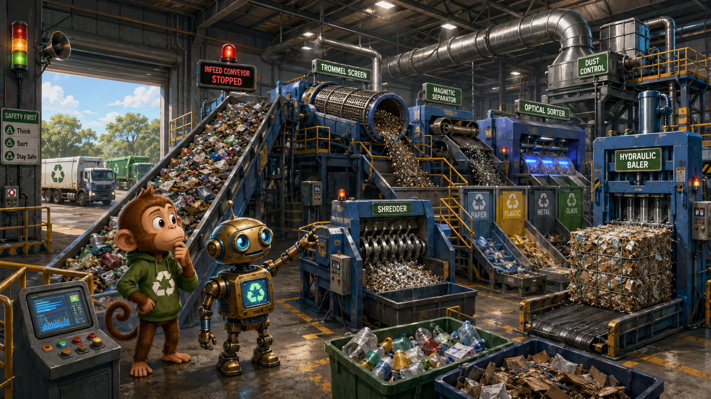
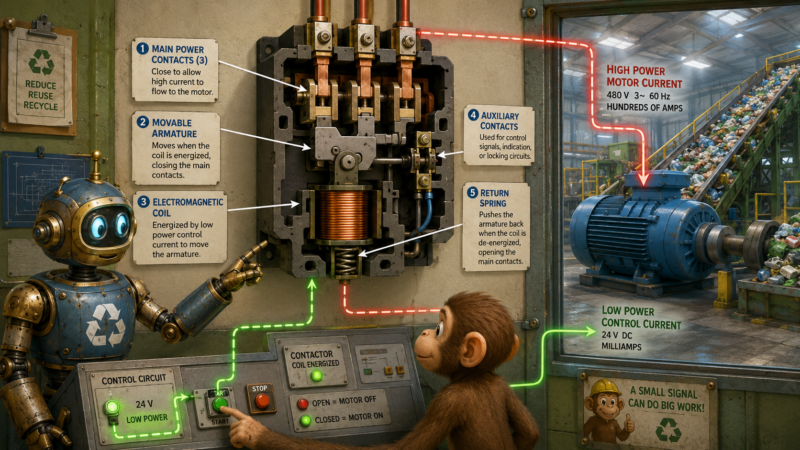
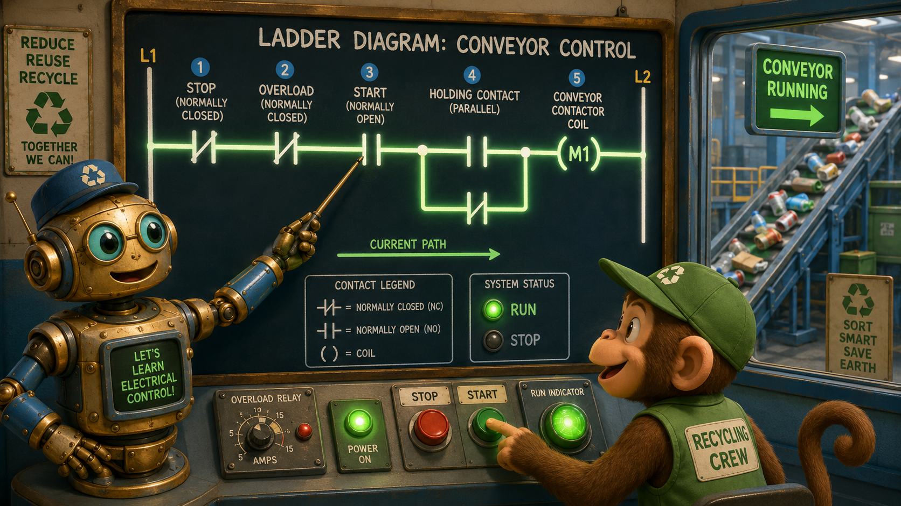
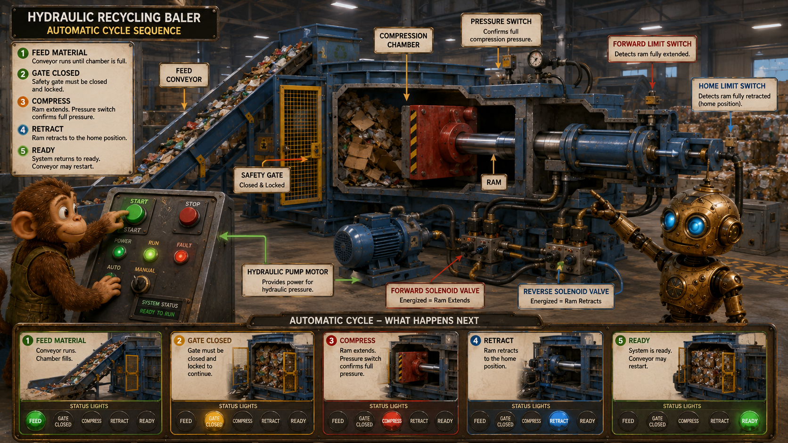
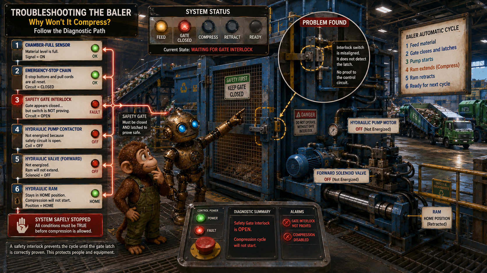

Material enters
Trucks unload onto the infeed conveyor, which meters material into the line.
Lesson 7 · Coordinated Machine Control
Collection trucks are lining up outside, but the recycling line is down. Monkey and Robot must restart the conveyors, separators, shredder, dust collector, compressor, and hydraulic baler in the correct order—and discover why the baler refuses to begin its cycle.

Wide landscape educational illustration, whimsical painterly 3D science-adventure style. Monkey and a compact brass-and-blue Robot stand inside a vast modern recycling center filled with conveyors, trommel screens, magnetic separators, optical sorters, a shredder, dust-control ducts, and a large hydraulic baler. Collection trucks wait outside while material backs up on the stopped infeed conveyor. Green recycling symbols, steel structures, warning lights, control panels, dramatic industrial lighting, no border, no watermark, 16:9 landscape.
Material must move through several machines in the correct order.
Trucks unload onto the infeed conveyor, which meters material into the line.
Screens, magnets, eddy-current equipment, optical sorters, and diverter gates divide the stream.
Shredders, compactors, and balers reduce volume and prepare material for shipping.
Why can the machines not simply run independently?
Each stage depends on the next stage being ready. Poor sequencing can cause jams, overflows, or unsafe operation.
Monkey says, “It looks like one enormous machine.” Robot replies, “It is many machines behaving like one system.”
The system separates heavy electrical work from the logic that commands it.
Carries operating current to conveyors, shredders, hydraulic pumps, fans, compressors, and trommel drives.
Decides when equipment is allowed to run.
The control circuit gives the command. The power circuit performs the heavy work.
When a motor will not run, identify whether the failure is in the control path, power path, motor, or mechanical load.
A contactor allows a small control current to switch a much larger motor current.
When energized, the electromagnetic coil creates a magnetic field.
The field pulls the armature and closes the main power contacts.
When the coil loses power, the spring opens the contacts and stops the motor.

Wide educational cutaway illustration inside a recycling-center motor-control room. Robot points to a large contactor showing the electromagnetic coil, movable armature, three main power contacts, auxiliary contacts, and return spring. Monkey presses a small green Start button while a large conveyor motor energizes behind glass. Clear arrows show low-power control current commanding high-power motor current. Painterly 3D industrial teaching style, 16:9 landscape.
“Normal” means resting and unpowered.
Open at rest and closes when activated.
Closed at rest and opens when activated.
Why are many safety contacts normally closed?
A broken wire can open the circuit and stop the machine instead of falsely allowing operation.
A healthy safety chain must be continuously proven. Loss of continuity removes permission to run.
A momentary Start button can keep a motor running through an auxiliary contact.
Pressing Start energizes the contactor coil.
A normally open auxiliary contact closes around the Start button.
Pressing Stop opens the control path and drops out the coil.
Why does the conveyor keep running after Start is released?
The holding contact provides a second path around the momentary Start button.
Monkey says, “The button only starts the story.” Robot replies, “The auxiliary contact keeps the story going.”
Ladder logic represents control conditions and outputs as readable rungs.
Two vertical rails represent control power.
Horizontal rungs represent individual control functions.
Contacts are conditions; coils, lamps, timers, and solenoids are outputs.

Educational wide landscape illustration in the recycling-center control room. Robot traces a large glowing ladder diagram from left to right: normally closed Stop, normally closed overload, normally open Start, parallel holding contact, and conveyor contactor coil. Monkey presses Start while the conveyor begins moving behind a glass window. Use clean symbols, current-path highlighting, green run indicator, painterly 3D storybook engineering style, 16:9 landscape.
Read each rung from left to right, then move from the top rung downward.
The coil energizes only when every required series condition is satisfied and a valid path is complete.
Interlocks prevent upstream machinery from feeding stopped equipment.
The infeed conveyor may run only when downstream conveyors and dust collection are proven, no stop is active, no overload is tripped, and the path is clear.
Why should downstream equipment start first?
So material always has somewhere to go and cannot pile up in stopped machinery.
Another machine’s proven status becomes a condition for operation.
Sensors tell the control system what the material and machinery are doing.
Detects material, counts objects, confirms flow, and identifies backups.
Confirm metal, gate position, ram position, shaft motion, or machine travel.
Confirm hydraulic pressure, compressor pressure, hopper level, or chamber-full condition.
Which sensor might confirm that the baler ram has returned home?
A limit switch or suitable proximity sensor.
Monkey says, “The machine needs eyes and ears.” Robot answers, “Sensors turn physical conditions into electrical evidence.”
The line uses electromagnetism both for motors and material separation.
An overhead electromagnet attracts steel cans, iron fragments, and other ferrous material.
A rapidly changing magnetic field induces currents in nonferrous metals and helps eject aluminum from the stream.
Separator systems may require conveyor interlocks, overtemperature protection, belt-motion detection, and emergency shutdown logic.
This machinery combines magnetic fields and induction from earlier lessons with the control logic in this lesson.
The baler combines motors, hydraulics, sensors, valves, timers, and safety interlocks.
A three-phase motor drives the hydraulic pump.
Forward and reverse solenoid valves extend or retract the ram.
Gate, pressure, level, and position switches determine whether the next step is allowed.

Wide educational cutaway illustration of a large hydraulic recycling baler. Show the feed conveyor, compression chamber, closed safety gate, hydraulic pump motor, forward and reverse solenoid valves, ram, pressure switch, forward limit switch, and home limit switch. Robot points to the sequence while Monkey watches status lamps change from Feed to Gate Closed to Compress to Retract to Ready. Industrial painterly 3D science-adventure style, clean arrows and labels, 16:9 landscape.
The forward and reverse solenoids must never energize together. The logic must make the commands mutually exclusive.
Timers coordinate delays, warnings, ventilation, and jam-clearing actions.
Dust collection starts first; after a delay, conveyors are permitted.
Ventilation remains on briefly after the shredder stops.
A warning horn sounds for a fixed time before machinery moves.
A reversing starter may briefly reverse the shredder to clear a jam. Forward and reverse contactors require electrical and mechanical interlocks.
Automatic logic may attempt only a limited number of restarts before locking out and requesting operator attention.
Routine commands must never override essential safety conditions.
Mushroom buttons, pull cords, guard switches, and safety relays remove permission for hazardous motion.
Overload relays protect motors from sustained excessive current caused by jams, failed bearings, missing phases, or heavy loads.
Indicator lamps, auxiliary contacts, current sensors, and speed sensors show whether a command produced the intended result.
After an emergency stop or guard fault, the system should require a deliberate reset and should not restart unexpectedly.
Pressing Start shows intent. An auxiliary contact proves the contactor changed state. A speed sensor proves the conveyor moved.
The chamber-full sensor is active, but the baler refuses to compress.

Dramatic educational illustration beside the recycling baler. The gate appears closed, but Robot points to a misaligned safety interlock sensor that is not proving the latch. Monkey follows a glowing diagnostic path from chamber-full sensor to emergency-stop chain, gate switch, pump contactor, hydraulic valve, and ram. The machine remains safely stopped. Warning lights, steel platforms, conveyors, and waiting collection trucks in the background. Painterly 3D industrial science-adventure style, clear diagnostic arrows, 16:9 landscape.
What is the final fault in the story?
The safety-gate interlock is misaligned, so the circuit does not receive proof that the gate is safely latched.
Monkey says, “The gate looks closed.” Robot replies, “The machine needs proof, not appearance.”
The central ideas behind coordinated machine control.
What does a holding contact do?
It maintains current to the contactor coil after the momentary Start button is released.
What is the main troubleshooting habit from this lesson?
Trace the control sequence and verify each required condition instead of assuming the motor has failed.